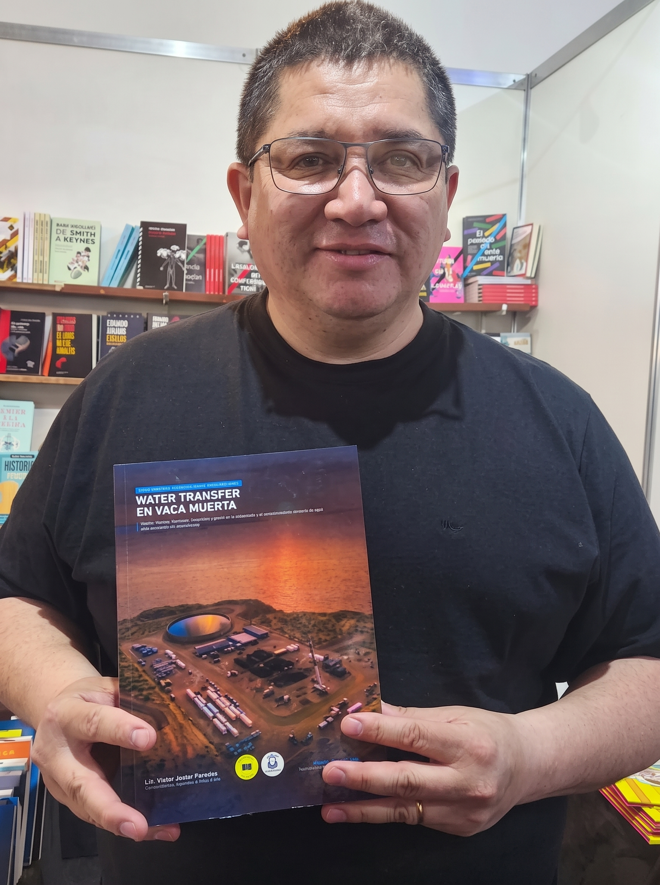
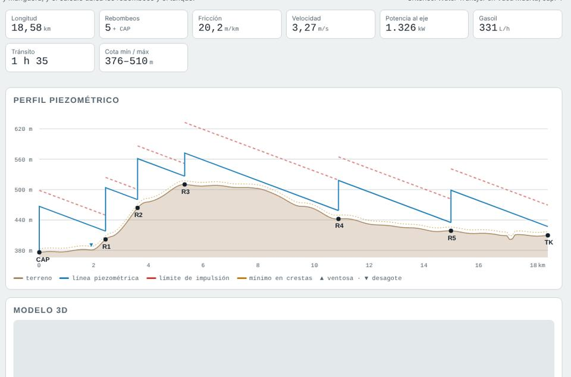
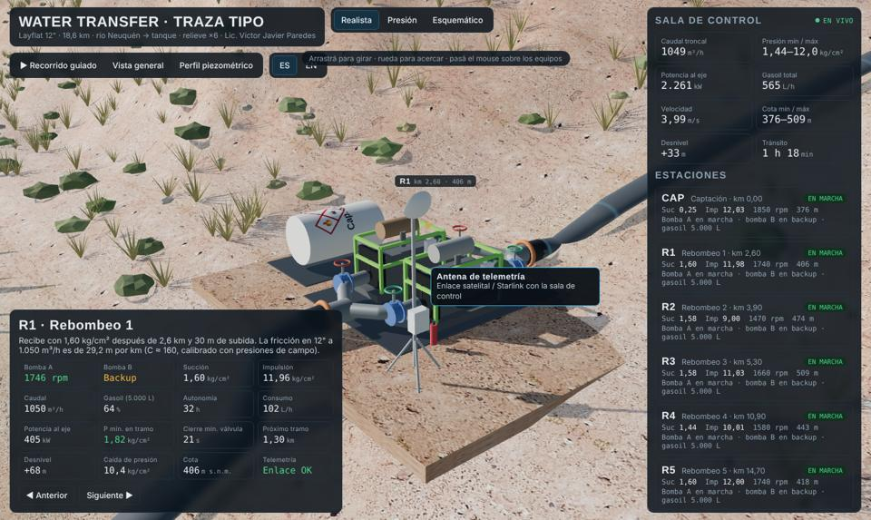
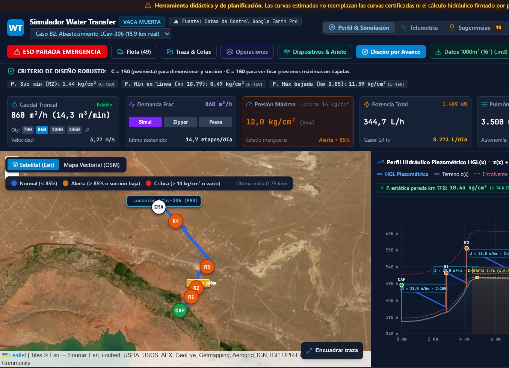

VPLicenciado en Higiene y Seguridad Laboral · Técnico en Hidrocarburos · HSE en operaciones de Vaca Muerta
Autor del manual Water Transfer en Vaca Muerta, una guía práctica sobre acueductos temporales de manguera layflat: cálculo hidráulico, pérdida de carga calibrada con presiones de campo, ubicación de rebombeos, golpe de ariete y operación segura. Estas herramientas llevan los criterios del libro a la pantalla, para diseñar una traza, entender cómo trabaja la línea y entrenar a quienes la operan.
Water Transfer en Vaca Muerta · 278 páginas · 20 capítulos · 12 anexos · precio y envío por WhatsApp

Cargás el KMZ de la traza, definís caudal y manguera, y calcula dónde van los rebombeos y el tanque.

Recorrido en 3D de una troncal de 18,6 km, desde el río hasta el tanque, sobre relieve de barda y meseta.

Simulador de operación: regulás las rpm de cada estación y ves cómo responden presiones y caudal en toda la línea.
Miércoles 28, de 14 a 16 h · Organiza Centro PyME · inscripción a través de Centro PyME
Para estudiantes de 3.er año de Hidrocarburos, Topografía, Geología y Seguridad e Higiene.
Presentación del libro en Neuquén: traza, cálculo hidráulico, rebombeos, tendido de layflat y seguridad en campo.
Cursos y charlas para cuadrillas, supervisores y áreas de HSE de operadoras, empresas de servicio y pymes, con los criterios del libro y las herramientas de esta página.